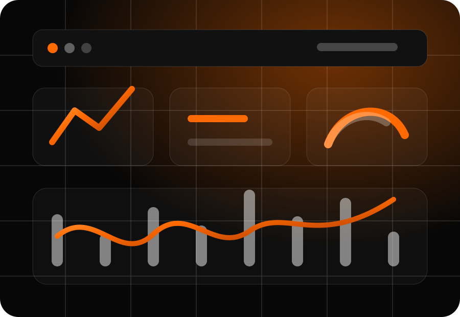
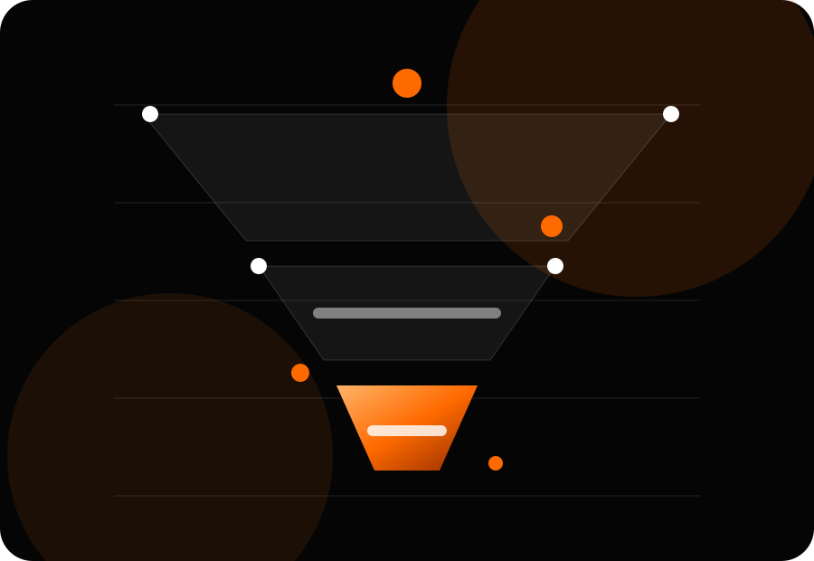

Gestão de
Estruturamos campanhas de pesquisa, performance e remarketing para captar pessoas que já estão buscando soluções como a sua.
Tráfego pago e performance
A Audax planeja, executa e otimiza mídia paga para empresas que precisam transformar investimento em oportunidades, vendas e crescimento mensurável.
Serviços de mídia paga
Cuidamos da estratégia de aquisição paga com foco em clareza de meta, qualidade das oportunidades e melhoria contínua dos resultados.
Estruturamos campanhas de pesquisa, performance e remarketing para captar pessoas que já estão buscando soluções como a sua.
Planejamos campanhas para Instagram e Facebook com testes de criativos, públicos, ofertas e mensagens comerciais.
Definimos metas, canais, verba, funil e indicadores para que a mídia paga trabalhe conectada ao objetivo do negócio.
Criamos páginas de destino objetivas para melhorar conversão, reduzir atrito e aumentar a qualidade dos leads.
Configuramos eventos, pixels, UTMs e leitura de dados para entender de onde vêm as oportunidades e onde há perda.
Acompanhamos orçamento, criativos, públicos e conversões para ajustar campanhas com base em dados reais.

Leitura de dados
Acompanhamos indicadores de mídia e sinais comerciais para entender quais anúncios, públicos e ofertas merecem mais investimento.
Método Audax
Tráfego pago performa melhor quando mídia, oferta, página, atendimento e mensuração trabalham na mesma direção.

Entendemos produto, ticket, margem, ciclo de venda, público e canais atuais antes de recomendar investimento.
Definimos verba, campanhas, objetivos, criativos, públicos e mensagens com base no estágio do funil.
Colocamos campanhas no ar com hipóteses claras para testar oferta, copy, público e página de destino.
Acompanhamos indicadores de mídia e negócio para cortar desperdícios e escalar o que gera retorno.
Performance em mídia paga
Nosso trabalho não termina quando o anúncio vai ao ar. A Audax acompanha a jornada entre investimento, clique, oportunidade e venda para entender onde a campanha está performando e onde precisa ser ajustada.
Diferenciais
O orçamento é distribuído conforme objetivo, maturidade da conta, potencial de conversão e dados disponíveis.
Campanhas precisam de variações de mensagem, oferta e abordagem para encontrar o que realmente movimenta o público.
Mostramos o que aconteceu, o que aprendemos e qual decisão deve ser tomada no próximo ciclo.
Avaliações
Organização, clareza sobre os números e decisões de campanha alinhadas ao objetivo comercial.
“A Audax trouxe clareza para o investimento em mídia. Hoje conseguimos entender melhor o custo por oportunidade e onde faz sentido escalar.”
Marcos Andrade • Consultoria empresarial“As campanhas passaram a ter método, testes e leitura de dados. Saímos da sensação de tentativa e passamos a acompanhar evolução real.”
Alexia Vilela • Tatuadora“O principal diferencial foi conectar anúncio, página e atendimento. Isso melhorou a qualidade das conversas geradas pelas campanhas.”
Camila Rocha • Clínica estéticaPerguntas frequentes
Impulsionar é uma ação pontual. Gestão de tráfego envolve estratégia, estrutura de campanhas, públicos, criativos, testes, acompanhamento de métricas e decisões para melhorar resultado ao longo do tempo.
Não necessariamente. O investimento ideal depende do objetivo, mercado, ticket e volume esperado de oportunidades. Começamos entendendo o negócio para sugerir uma verba coerente e evitar desperdício.
As campanhas podem gerar sinais rapidamente, mas performance consistente exige fase de aprendizado, testes de criativos, ajuste de públicos e melhoria da página ou atendimento. O objetivo é evoluir com dados, não prometer milagre.
Nenhuma agência séria deve prometer vendas garantidas, porque o resultado depende também de oferta, preço, atendimento, reputação e processo comercial. A Audax trabalha para aumentar previsibilidade, reduzir desperdícios e melhorar a qualidade das oportunidades.
Não obrigatoriamente. Se a estrutura atual não for suficiente, orientamos ou desenvolvemos os materiais necessários para a campanha performar melhor, como anúncios, variações de copy e páginas de destino.
Trabalhamos com , , e outros canais quando fizerem sentido para a estratégia, o público e a etapa do funil.
Diagnóstico de mídia paga
Fale com a Audax, em Varginha-MG, e receba uma análise inicial sobre canais, verba, estrutura de campanha e oportunidades de otimização.
Falar com a Audax